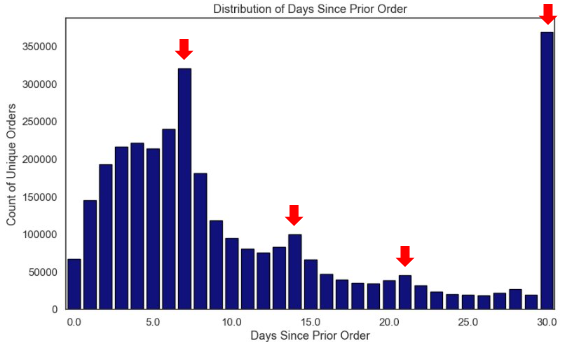

Overview
EDA is used to uncover key insights about customer behavior, including when shoppers buy groceries, how frequently they place orders, and which products are most commonly purchased. By analyzing these patterns, EDA provides a foundational understanding of shopping habits and guides the deeper data mining techniques applied later in the project.
Time-Based Ordering Patterns
Online grocery orders peak on Saturdays and Sundays, especially between 9:00 a.m. and 5:00 p.m., suggesting that many customers use the weekend to prepare for the week. Thursdays display the lowest order volume.

Weekend vs Weekday Trends
The horizontal bar graph shows that produce, canned goods, and frozen items are more common on weekends. Beverages, snacks, and breakfast items are more popular on weekdays. Items in the middle, such as bakery and bulk, are consistent through the week.

Order Frequency
Weekly purchasing patterns are identified as displayed in days 7, 14 and 21. Also a 30 day preference is highly visible.
Top Products
To highlight the most frequently purchased items in the Instacart dataset, a word cloud visualization was created. Because many products appeared with multiple naming variations, basic NLP preprocessing—such as normalization and keyword grouping—was applied to ensure clearer and more meaningful representation. The resulting visualization shows strong dominance of dairy items (such as milk, yogurt, cheese, and eggs) and produce, especially fruits like bananas, apples, and avocados. These trends reflect common household staples and provide an early view of the categories that drive the highest volume of grocery purchases.